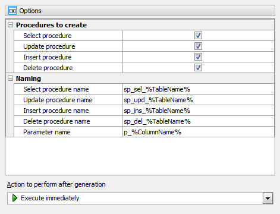

Firebird

Firebird es un sistema de gestión de bases de datos relacionales (RDBMS) de código abierto, potente, estable y multiplataforma. Deriva del código de InterBase 6.0, liberado por Borland en 2000, y es gratuito y sin costos de licencia. Se utiliza para crear y gestionar bases de datos eficientes para diversas aplicaciones, desde pequeñas hasta grandes, gracias a su robustez y escalabilidad.
Características principales
Código abierto y gratuito: No tiene costos de licencia, lo que lo hace una opción atractiva para el desarrollo.
Multiplataforma: Funciona en Windows, Linux, macOS y otras plataformas Unix.
Motor robusto: Herencia de la tecnología de InterBase, lo que le confiere madurez y estabilidad.
Compatible con SQL: Utiliza el lenguaje estándar SQL para consultas y manipulación de datos.
Escalable: Adecuado para proyectos de cualquier tamaño, desde aplicaciones pequeñas hasta grandes sistemas empresariales.
Ligero y eficiente: Se caracteriza por su bajo consumo de recursos y sencilla configuración.
¿Para qué se utiliza?
Firebird es ideal para gestionar bases de datos en una amplia variedad de aplicaciones, como: Sistemas de punto de venta, Análisis de procesos industriales, Aplicaciones empresariales, Desarrollo de aplicaciones en general.
Ventajas de Firebird
Excelente rendimiento: Ofrece alta velocidad y eficiencia en la gestión de datos.
Estabilidad: Su tecnología madura garantiza un funcionamiento fiable.
Bajo costo total de propiedad: Al ser gratuito, permite destinar recursos a otras áreas críticas como el hardware y la capacitación.
Facilidad de uso: Su configuración es sencilla, lo que facilita su adopción.
Ejemplo de CRUD operacion
